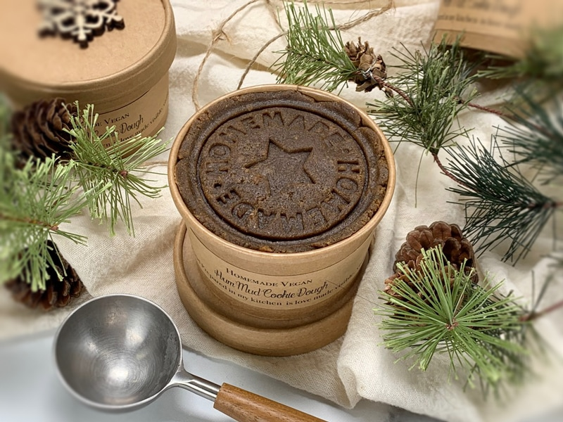
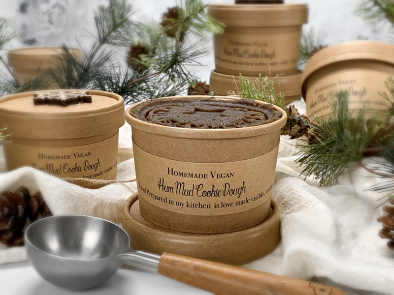
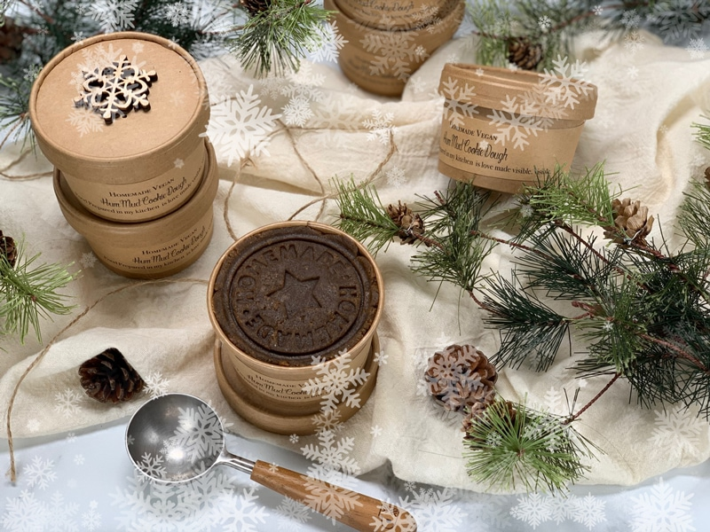

Frozen Cookie Dough Gift Idea
What do you give the person on your Christmas list who has “everything” or to the coworkers you hardly know but wish to bless? Tasty treats, of course… tasty RAW treats that is. One way to everyone’s heart and soul is through the stomach. This holiday season, give your family and friends a gift from the heart — yours and the heart of your home: the kitchen. I have a brilliant last-minute solution that is easy to make, tastes delicious, doesn’t require baking, and is far more nutritious than any store bought sweet treat!

Well, I have an idea for you. Most of us love raw cookie dough… especially raw “raw” cookie dough. It’s quite simple, click (here), select your favorite raw cookie dough (or hand select ones that you know others will love), make it, and pack it into a freezer-safe container. Write a little note explaining that this is a gift of edible raw cookie dough. You can even print the recipe out from the site and put it in their Christmas card. Your loved ones can either store it in the freezer and enjoy a bite here and there, or they can thaw it and make cookies in their dehydrator. They could also, roll the dough into balls, cover them with chopped nuts, seeds, or cacao powder and enjoy as is.

If you are looking for a container to place the raw dough in, run to the grocery store and head to the deli. Most stores these days have a soup bar. The containers are meant to hold hot and cold items. Select what size you want and let the cashier know that you wish to purchase one or two, or however many ever you need… most times they will just give them to you. Some stores that sell them for around .10 to .25 cents each.

I just so happened to have a cookie dough stamp that reads, “Homemade.” After packing the dough in, I gave a quick firm press, leaving a lasting impression (in more ways than one). You can typically find these cookie stamps in kitchen stores, some craft stores, or online. (here, here, and here)
Surprise your loved ones with delicious homemade Christmas treats.
Have a blessed and wonderful holiday! amie sue
© AmieSue.com